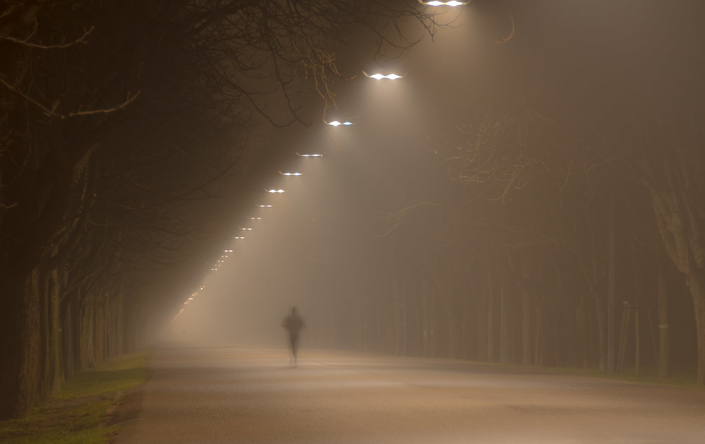

Aldo Noldlari A.K.A. 4head. All characters have a backstory but to the character of 4head his appearance defines his past and his present. A character with an overwhelming past appears in this world, at first glance you’ll notice his bandages that cover the majority of his forehead and face; thus the name given 4head. Normally his bandages cover his forehead and part of the left side of his face, this is to hide what defines his anomaly ability on his eye. He eye as fierce as fire, as bright as the sun, yet his personality is calm. He’s a good character with good intentions, but good intentions with a dangerous power is difficult to manage. Misunderstood by many and targeted, he knows the consequences for what he is, you can get close to anyone who ends up affected. ( Yet in the story a few do and is what makes this story special). Because he is being hunted he has to live in the shadows, cautious at all times avoiding contact, however to survive in this world you need the help of others even if it's to find food. So contact is innetable in order to live. At first glance people judge him by his looks but to those that end up knowing him as the story progresses soon realize who he really is and his worth.
